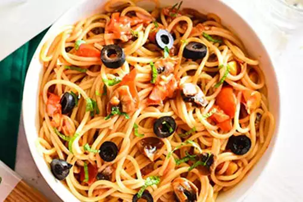

Pot Pasta with Olives and Mushrooms

Description
Looking for a healthy pasta recipe that you can enjoy with your loved ones? Your search stops here! One Pot Pasta with Olives and Mushrooms is an easy-to-make dish that you can prepare at home in just 30-minutes. All you need is mushrooms, black olives, whole wheat spaghetti pasta, grilled tomatoes and garlic along with extra virgin olive oil. Just toss the sauteed veggies in boiled pasta and enjoy your dish. (Recipe: Del Monte)
Ingredients
- 2 cup wheat spaghetti
- 3 tomatoes
- 11/2 tablespoon extra virgin oil
- 4 sliced black olives
- 5 sliced mushrooms
- 6 cloves chopped garlic
- 2 drops lemon juice
- salt as required
Steps
- Boil the whole wheat spaghetti pasta
To prepare this amazing and healthy pasta, put a large pan over medium flame and boil water in it. Then, add the whole wheat spaghetti in it along with a little olive oil and a pinch of salt to prevent the pasta from sticking. Cook till al dente and when done, turn off the flame and
- Grill and dice the tomatoes
Next, wash the whole tomatoes and grill them over medium flame or you can grill them in the oven also. Once done, dice them in a bowl.
- Saute mushrooms and tomatoes
Now, put a wok over medium flame and heat oil in it. Toss in the chopped garlic and mushrooms along with chilli flakes. Saute for 2-3 minutes and then add the roasted and diced tomatoes and cook till they are mushy. Season the cooked sauce with salt and a dash of lemon juice.
- Toss spaghetti pasta in mushroom and tomato sauce
Finally, add the cooked pasta in the wok and toss well. Cook for 2-3 minutes and garnish with sliced mushrooms and your One-pot Pasta with Mushrooms and Olives is ready to enjoy!